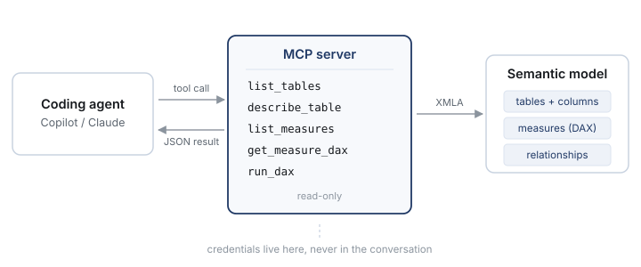
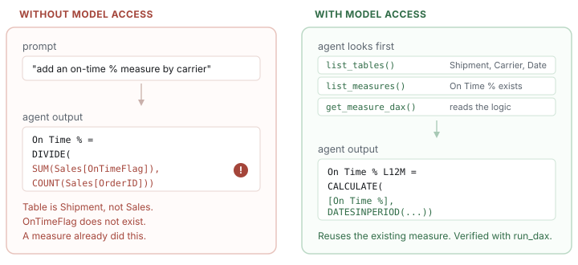

Giving an AI agent read access to a Power BI semantic model
Or: why your coding assistant keeps writing DAX against columns that don't exist.
Ask a coding assistant for a DAX measure and you'll usually get something that looks fine. It
references Sales[Amount]. Your column is called Sales[NetAmount]. Or it
writes a Total Revenue measure from scratch when you already have one, defined
slightly differently, three display folders over.
I used to blame the prompt for this. Spent longer than I'd like to admit pasting table definitions into chat windows before every question. That works, sort of, right up until the model has forty tables and the paste doesn't fit.
The real problem is duller than a prompting failure. The assistant has never seen your model.
It's pattern-matching against every Power BI file on the public internet, and on average those
files have a column called Amount. Given nothing else to go on, that's a perfectly
reasonable guess. It's also wrong.
So give it something to go on. The Model Context Protocol is an open standard for exposing tools and data to an LLM client over JSON-RPC, and a tabular model turns out to be a very natural thing to put behind one.

Everything here runs against a throwaway model I built for this post. Three tables, two measures, generated data. No employer or client material appears anywhere below.
The demo model
Small enough to read in one go, real enough to show the problem:
table Shipment
column ShipmentKey
dataType: int64
isHidden: true
column CarrierKey
dataType: int64
isHidden: true
column NetCharge
dataType: decimal
column DeliveredOnTime
dataType: int64
measure 'Total Net Charge' = SUM(Shipment[NetCharge])
measure 'On Time %' =
DIVIDE(
SUM(Shipment[DeliveredOnTime]),
COUNTROWS(Shipment)
)
formatString: 0.0%
table Carrier
column CarrierKey
dataType: int64
isHidden: true
column CarrierName
dataType: string
table 'Date'
column Date
dataType: dateTime
column MonthStart
dataType: dateTime
Look at On Time % for a second. It divides a flag sum by all rows, including
shipments that were never delivered. Whether that's right depends on business rules nobody wrote
down, and the name certainly doesn't tell you. No amount of clever prompting gets an agent there.
It has to read the expression.
What to actually expose
My first version had exactly one tool: run_dax. Send a query, get rows back. Elegant,
and nearly useless — to write a working query the agent needs to already know what's in the
model. I'd rebuilt the original problem with extra steps.
Splitting discovery from execution works much better:
| Tool | Returns | Why it earns its place |
|---|---|---|
list_tables |
Names, row counts, hidden flag | Cheap orientation before pulling anything heavy |
describe_table |
Columns, types, relationships | Kills the invented-column-name problem |
list_measures |
Names, folders, format strings | Lets it find what already exists |
get_measure_dax |
The expression itself | Where the business logic actually lives |
run_dax |
Result rows | Verification instead of confident assertion |
The split is mostly about token cost. Listing 200 measure names is a small payload. Returning 200 DAX expressions is not, and on a model of any real size you'll blow the context window. Let the agent narrow first, then fetch detail for the two or three things it cares about.
The server
With the Python SDK it's mostly decorators. Connecting to the model underneath is an ordinary XMLA client, nothing exotic:
from mcp.server.fastmcp import FastMCP
mcp = FastMCP("powerbi-model")
@mcp.tool()
def list_tables() -> list[dict]:
"""List tables in the model with row counts."""
return [
{"name": t.Name, "rows": row_count(t), "hidden": t.IsHidden}
for t in model.Tables
]
@mcp.tool()
def get_measure_dax(measure_name: str) -> dict:
"""The DAX expression behind a measure."""
m = find_measure(model, measure_name)
return {
"name": m.Name,
"table": m.Table.Name,
"expression": m.Expression,
"format_string": m.FormatString,
}
@mcp.tool()
def run_dax(query: str, max_rows: int = 100) -> dict:
"""Execute a read-only DAX query."""
return execute_query(query, max_rows=max_rows)
One thing that caught me out: those docstrings matter more than the code. They're shipped to the model as the tool description, and they're the entire basis on which it picks a tool. I had a vague one early on — "get model info" — and watched the agent reach for it constantly, for everything. Made it specific, and the behaviour changed the same afternoon.
What changes
Same request either way: "add an on-time percentage measure by carrier over the last 12 months."

The call doing the heavy lifting is get_measure_dax. Once the agent can see that
On Time % exists and how it's defined, it stops reinventing and starts composing:
On Time % L12M =
CALCULATE(
[On Time %],
DATESINPERIOD(
'Date'[Date],
MAX( 'Date'[Date] ),
-12,
MONTH
)
)
Then it runs the thing, which is the part I care about most:
→ run_dax("EVALUATE TOPN(5,
SUMMARIZECOLUMNS(
Carrier[CarrierName],
\"OnTime\", [On Time % L12M]
),
[OnTime], ASC)")
← Carrier D 0.831
Carrier A 0.874
Carrier K 0.902
Numbers I can check against something I already trust. That's the gap between a suggestion and a result.
Things that bit me
Big models don't fit
Obvious in hindsight. A production model with hundreds of tables will not fit in a prompt, so
return summaries by default and detail on request. list_tables gives names and row
counts, nothing more. If the agent wants columns, it can ask.
Read-only, at least to start
You can expose mutation over MCP — create measures, alter tables, all of it. I'd think hard first. A read-only server that proposes TMDL for a human to apply gets you most of the benefit and none of the 2am incident. Widen the permissions later, once the workflow has earned some trust.
Cap the row count
EVALUATE against a million-row fact table will cheerfully try to return a million
rows. Cap it server-side, and make the response say it was capped. Otherwise the agent
reasons over a truncated set with no idea that's what it's doing.
Keep credentials on the server
The server authenticates to the model; the agent only ever talks to the server. If a connection string reaches the prompt, it reaches the logs.
Where it actually pays off
Measure authoring is the demo, but it's not where most of the value ended up for me. What I actually use it for:
- Impact analysis. "What breaks if I rename this column?" is a graph walk over measure expressions — tedious by hand, trivial for something that can read all of them.
- Documentation. A data dictionary that regenerates on demand, instead of one written once that quietly goes stale by March.
- Review. An agent reading real DAX can flag the measure using
/where it wantsDIVIDE, or a relationship filtering the wrong way. - Onboarding. New analysts asking questions in English and getting answers grounded in the model, rather than in what an LLM assumes models look like.
None of this needs the agent to be clever. It needs the agent to be looking at the right thing.